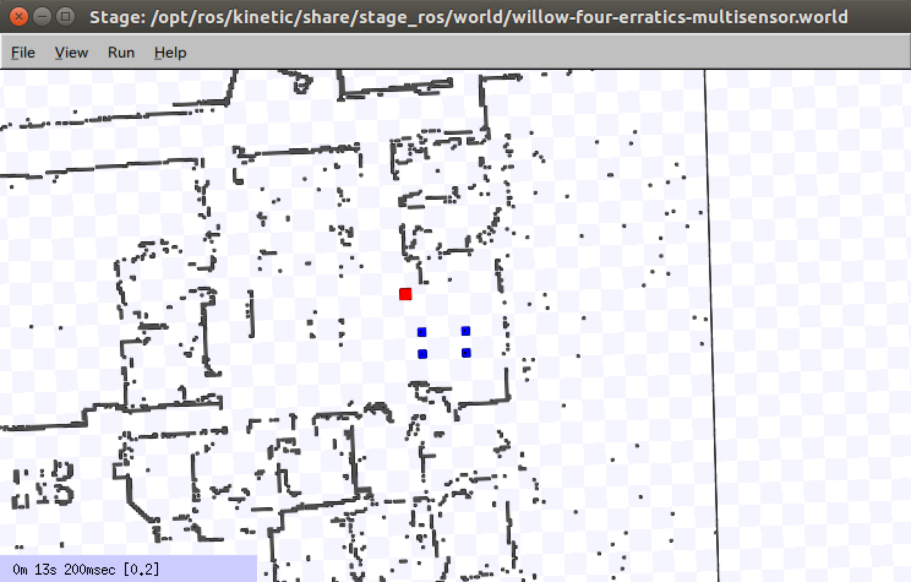

Stage

- 官方网站：http://wiki.ros.org/stage
- GitHub：https://github.com/rtv/Stage
- 属于ROS生态
- 许可：GPL 开源
引言
Stage是一款轻量级的二维机器人仿真器 (2D Robot Simulator)，用于二维环境（无z轴高度信息）的仿真。最早于1999年由USC Robotics Research Lab (南加州大学机器人实验室) 的Richard Vaughan开发，常用于路径规划或多机器人 (Multi-Agent) 仿真。Stage的设计哲学是提供"足够好"的仿真精度来验证算法，同时保持极高的运行效率。
发展历程
- 1999年：Richard Vaughan在USC开始开发Stage，作为Player/Stage项目的一部分
- 2001年：随Player/Stage框架一同发布，成为早期机器人研究的重要工具
- 2004年：Gazebo从Player/Stage项目中分离出来，成为独立的三维仿真器。Stage继续专注于二维仿真
- ROS集成：后期通过
stage_ros包集成到ROS生态中，提供标准ROS话题接口
Player/Stage 框架
Stage最初是Player/Stage框架的重要组成部分：
- Player：一个网络化的机器人设备服务器 (Robot Device Server)，为各种传感器和执行器提供统一的网络接口。客户端程序通过TCP/IP连接到Player服务器，以统一的方式访问机器人硬件
- Stage：作为Player的仿真后端，模拟一个二维世界中的多个机器人及其传感器。Stage将仿真数据以Player接口的形式发布，使得控制程序无需修改即可在仿真和真实硬件之间切换
虽然Player项目本身已不再活跃维护，但Player/Stage框架的设计理念（硬件抽象和仿真-实物无缝切换）对后来的ROS架构产生了深远影响。
二维仿真特性
Stage的仿真在二维平面上进行，核心特性包括：
- 二维栅格地图 (2D Occupancy Grid Map)：使用位图 (Bitmap) 定义仿真环境，黑色区域表示障碍物，白色区域表示自由空间
- 简化的传感器模型：提供二维激光扫描仪 (2D Laser Scanner)、声纳 (Sonar)、红外测距 (IR Ranger)、视觉传感器等的简化仿真
- 差速驱动模型 (Differential Drive Model)：内置差速驱动和全向驱动 (Omnidirectional Drive) 等常用移动机器人运动模型
- 碰撞检测：基于二维多边形的碰撞检测，计算效率高
多机器人仿真
Stage的最大优势在于多机器人仿真的效率。由于采用二维简化模型，Stage可以在单台计算机上同时仿真数百甚至上千个机器人，这是三维仿真器难以达到的规模。典型应用场景包括：
- 多机器人协同探索 (Multi-Robot Exploration)：验证多机器人地图探索和任务分配算法
- 集群行为研究 (Swarm Behavior)：研究大规模机器人集群的群体智能行为
- 多机器人路径规划 (Multi-Robot Path Planning)：测试多机器人避碰和协调策略
- 覆盖算法 (Coverage Algorithms)：验证区域覆盖和巡逻策略
与ROS的集成
Stage通过 stage_ros 功能包集成到ROS生态中。该包将Stage仿真的传感器数据和机器人状态以标准ROS话题发布：
/base_scan：激光扫描数据 (sensor_msgs/LaserScan)/odom：里程计数据 (nav_msgs/Odometry)/cmd_vel：速度指令 (geometry_msgs/Twist)
这意味着为ROS编写的导航和规划算法（如Navigation Stack中的 move_base）可以直接在Stage仿真环境中运行和测试，无需任何代码修改。
世界文件格式 (World File)
Stage使用 .world 文件定义仿真场景，语法简洁直观：
# 定义地图
floorplan
(
name "map"
bitmap "hospital.png"
size [40.0 20.0 1.0]
)
# 定义机器人
pioneer
(
name "robot_0"
pose [-5.0 2.0 0.0 90.0]
sicklaser()
)
世界文件引用位图图像作为地图，并通过简单的参数块定义机器人的初始位置和搭载的传感器。
适用场景与局限
适用场景：
- 需要大规模多机器人仿真的研究
- 二维导航和路径规划算法的快速验证
- 计算资源有限的环境中进行算法开发
- 教学演示中需要快速运行的仿真
局限性：
- 仅支持二维仿真，无法模拟三维空间中的机器人运动（如无人机、人形机器人）
- 传感器模型较为简化，不适合需要高保真传感器数据的研究
- 不支持动力学仿真，机器人运动基于运动学模型
- 项目维护已不活跃，功能更新有限
安装与配置
ROS 1 安装
在 Ubuntu 20.04 + ROS Noetic 环境下，通过 apt 直接安装 stage_ros 功能包：
# ROS 1 (Ubuntu 20.04 + Noetic)
sudo apt install ros-noetic-stage-ros
安装完成后，stage_ros 提供 stageros 节点，可通过 roslaunch 启动仿真场景。
ROS 2 兼容性说明
Stage 官方对 ROS 2 的支持较为有限。社区维护了 stage-ros2 封装包，通过适配层将 Stage 的数据发布为 ROS 2 话题格式。若项目主要基于 ROS 2，建议评估是否改用 Gazebo (与 ROS 2 原生集成) 或 Webots (内置 ROS 2 驱动) 等替代方案。
使用示例：单机器人导航
以下展示在 Stage 中运行单机器人自主导航的完整流程。
第一步：创建世界文件
新建 hospital.world，引用地图位图并放置一个Pioneer机器人及激光传感器：
include "pioneer.inc"
include "map.inc"
include "sick.inc"
# 定义仿真环境地图（引用灰度PNG作为占用图）
floorplan
(
name "hospital"
bitmap "hospital.png"
size [40.0 20.0 1.0]
pose [0 0 0 0]
)
# 放置一个Pioneer机器人，挂载SICK激光扫描仪
pioneer
(
name "robot_0"
pose [-3 0 0 0]
sicklaser()
)
第二步：启动Stage仿真
# 启动 stage_ros 节点，加载世界文件
roslaunch stage_ros stageros.launch world:=hospital.world
成功启动后，stageros 节点会发布 /base_scan、/odom 等标准话题，并订阅 /cmd_vel 接收速度指令。
第三步：启动 move_base 导航
# 启动导航栈（需要提前配置 move_base 参数文件）
roslaunch my_robot_navigation move_base.launch
move_base 使用 Stage 发布的激光数据和里程计构建代价地图 (Costmap)，并通过全局规划器和局部规划器计算导航路径，将速度指令发回 Stage 驱动虚拟机器人运动。
第四步：在RViz中可视化
# 启动 RViz 可视化
rosrun rviz rviz
在 RViz 中添加 LaserScan、Map、Path 等显示项，可实时观察导航过程中的激光扫描、地图更新和规划路径。
多机器人仿真示例
Stage 天然支持在同一世界文件中定义多个机器人，结合 stage_ros 的命名空间机制实现多机器人独立控制。
世界文件：定义三台机器人
include "pioneer.inc"
include "map.inc"
include "sick.inc"
floorplan
(
name "hospital"
bitmap "hospital.png"
size [40.0 20.0 1.0]
pose [0 0 0 0]
)
# 三台机器人分布在不同初始位置
pioneer(name "robot_0" pose [-3 0 0 0] sicklaser())
pioneer(name "robot_1" pose [0 0 0 0] sicklaser())
pioneer(name "robot_2" pose [3 0 0 0] sicklaser())
stage_ros 会自动为每台机器人创建独立的 ROS 命名空间，话题格式为：
/robot_0/base_scan、/robot_0/odom、/robot_0/cmd_vel/robot_1/base_scan、/robot_1/odom、/robot_1/cmd_vel/robot_2/base_scan、/robot_2/odom、/robot_2/cmd_vel
每台机器人的导航节点在各自命名空间下独立运行，互不干扰。
多机器人协同探索
多机器人探索常用的经典算法为基于前沿的探索 (Frontier-Based Exploration)：
- 每台机器人维护各自的局部地图，并将地图共享给中央协调节点（或采用分布式方式合并）
- 从合并后的全局地图中提取前沿单元格 (Frontier Cells)，即已知区域与未知区域的边界
- 协调节点根据各机器人的当前位置和前沿距离进行任务分配，避免多机器人探索同一区域
- 各机器人分别导航至分配的前沿目标点，扩展已知地图，直到不存在新的前沿为止
在 Stage 中验证此类算法时，可以直接替换机器人数量和地图，无需修改算法代码，这正是Stage轻量化设计的核心价值。
传感器配置
Stage提供了多种传感器模型，均以简化方式建模，以兼顾计算效率与基本物理特性：
| 传感器类型 | 描述 | 典型参数 |
|---|---|---|
| sicklaser | SICK LMS系列激光扫描仪仿真 | 181条扫描线，180° 视场角 (FOV)，最大量程5m |
| sonar | 超声波声纳阵列 | 16个波束，近距离探测，有锥形发散角 |
| ranger | 通用可配置测距传感器 | 波束数、FOV、量程均可在世界文件中自定义 |
| camera | 基础视觉传感器 | 返回简化二维图像，可检测带颜色标记的目标物体 |
在世界文件中配置自定义 ranger 传感器示例：
define myrangesensor ranger
(
sensor
(
range [ 0.0 3.0 ] # 最小和最大量程（米）
fov 90.0 # 视场角（度）
samples 90 # 扫描线数量
)
)
与Gazebo的对比
| 维度 | Stage | Gazebo |
|---|---|---|
| 仿真维度 | 2D平面仿真 | 完整3D仿真 |
| 物理精度 | 无物理引擎，运动学模型 | ODE/Bullet/DART物理引擎，支持动力学 |
| 传感器真实感 | 低，几何简化模型 | 高，支持相机图像、点云、IMU等 |
| 多机器人规模 | 极高，可达1000+机器人 | 低，通常10台以内 |
| 计算效率 | 极高，单核即可大规模仿真 | 低，GPU加速也难以支持大规模场景 |
| ROS集成 | 通过stage_ros，ROS 1为主 | 原生集成ROS 1和ROS 2 |
| 适用场景 | 多机器人算法验证、集群研究 | 高保真单机器人测试、感知算法开发 |
| 维护状态 | 社区维护，更新较少 | 活跃维护，持续更新 |
典型研究应用
Stage因其高效的多机器人仿真能力，被大量学术研究采用，典型应用包括：
-
多机器人地图探索 (Frontier-Based Exploration)：在未知环境中，多台机器人协调分配前沿目标点，共同构建完整地图。Stage支持在数十台机器人规模下快速验证分配策略的有效性。
-
集群行为 (Swarm Behavior)：基于Reynolds规则（分离、对齐、聚合）或stigmergy机制研究数百台机器人的群体涌现行为。Stage的低计算开销使得大规模集群仿真成为可能。
-
覆盖路径规划 (Coverage Path Planning)：研究机器人如何以最短路径遍历指定区域，应用于清洁机器人、农业巡检等场景。Stage的二维地图格式便于设计规则或非规则覆盖区域。
-
多智能体路径规划 (Multi-Agent Path Finding, MAPF)：在同一环境中为多台机器人规划无碰撞路径，研究CBS (Conflict-Based Search)、ECBS等算法。Stage可直接验证规划结果的可执行性。
-
大规模仿真 (1000+ Robots)：Stage是为数不多能够在单台计算机上支持千台机器人同时运行的仿真平台，特别适合验证可扩展性 (Scalability) 是否随机器人数量线性增长的理论分析。
局限性与替代方案
主要局限
- 仅支持2D：Stage无法模拟无人机 (UAV)、人形机器人 (Humanoid) 等需要三维运动空间的系统，若需三维仿真请使用Gazebo
- 无动力学仿真：机器人运动采用纯运动学模型，无法模拟惯性效应、摩擦力、关节动力学等物理现象，不适合力控或动力学控制算法的验证
- 维护状态有限：Stage主仓库更新不活跃，部分功能存在已知缺陷，社区有若干fork版本但碎片化较严重
- 传感器保真度低：简化的传感器模型与真实传感器差距较大，不适合感知算法（如SLAM、目标检测）的深度验证
替代方案
- ARGoS：专为大规模集群机器人仿真设计，支持三维仿真，模块化程度高，在集群研究领域可替代Stage
- Webots：开源三维机器人仿真器，内置ROS 2驱动，支持多种机器人模型和真实传感器仿真，适合需要三维场景的多机器人项目
- Gazebo / Ignition Gazebo：ROS官方推荐的仿真平台，与ROS 2深度集成，物理和传感器保真度高，适合工程级验证
- MORSE：基于Blender的三维机器人仿真器，支持Python脚本，适合需要复杂视觉场景的研究
参考资料
- Stage ROS Wiki页面
- Stage GitHub仓库
- stage_ros功能包
- ARGoS多机器人仿真器
- Webots开源机器人仿真器
- Vaughan, R. (2008). Massively multi-robot simulation in Stage. Swarm Intelligence, 2(2-4), 189-208.
- Gerkey, B. P., Vaughan, R. T., & Howard, A. (2003). The Player/Stage project: Tools for multi-robot and distributed sensor systems. Proceedings of the International Conference on Advanced Robotics.
- Yamauchi, B. (1997). A frontier-based approach for autonomous exploration. IEEE International Symposium on Computational Intelligence in Robotics and Automation.